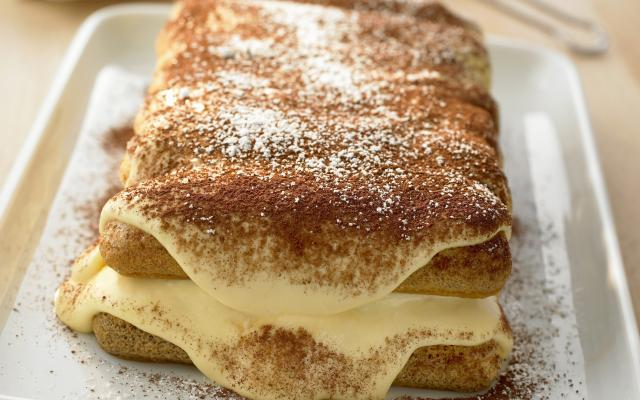

tiramisu

ingrediënten
- 500g mascarpone
- 150g griessuiker
- 2 pakjes boudouirkoekjes
- 40 amaretto
- cacaopoeder
- 3 eieren
- 2 zakje vanillesuikers
- 3kopjes sterke koffie
- poedersuiker
bereiding
- Splits de eieren. Meng de dooiers met de mascarpone en de fijne suiker. Klop het eiwit stijf samen met de vanillesuiker. Spatel het door de mascarpone.
- Meng de koffie met de amaretto. Dompel er de helft van de koekjes in en schik ze in een schaal. Bestrijk met de helft van de mascarponecrème en bestrooi met cacaopoeder.
- Leg daarop de rest van de koekjes en bestrijk met de rest van de crème. Eindig met cacaopoeder en poedersuiker. Zet 1 nacht in de koelkast.